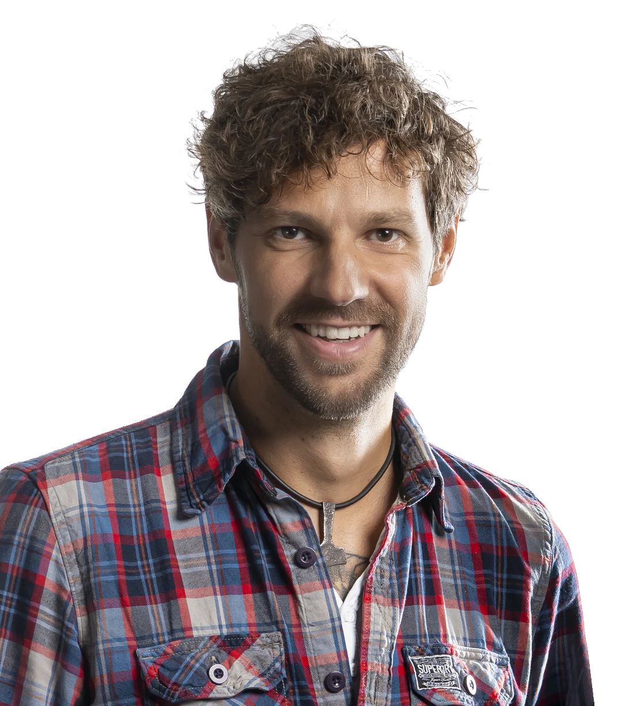
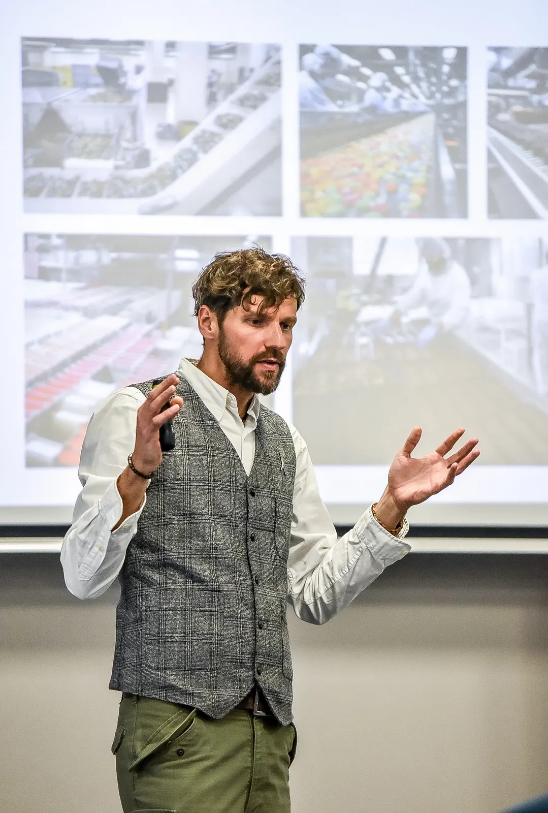

O mnie
Masz dość agencji marketingowych, które zaczynają od pięknej prezentacji i obietnic, a kończą, gdy przepalą budżet?
Nie wierzysz strategiom pisanym przez ekspertów marketingu, którzy nigdy nie ryzykowali własnych pieniędzy w biznesie?
Męczą Cię reklamy, kampanie i marketing, który krzyczy coraz głośniej – ale mówi coraz mniej?
Jeśli to czujesz, polubimy się.


Zbudowałem firmę od zera, rozwinąłem ją i sprzedałem. Mowa o wydawnictwie MADE IN Warmia & Mazury. Przez lata kierowałem nim jako dyrektor kreatywny, odpowiadając za marketing, wizerunek, treści i organizowane wydarzenia. Firmę sprzedałem w 2025 roku.
Jednocześnie przez kilkanaście lat z sukcesem rozwijałem agencję marketingową Auris Media Group, która pracowała dla topowych marek – tworząc nieszablonowe, często pionierskie kampanie reklamowe, strategie marketingowe, wydarzenia i multimedia.
Zmiana podejścia do życia, która dokonywała się we mnie w ostatnich latach, zmieniła też moje podejście do marketingu i szerzej – do biznesu.
Dziś, rozwijając jednocześnie agencję event marketingu Rabanu Narobi, doradzam firmom: pomagam poukładać nie tylko marketing, ale jako doświadczony przedsiębiorca patrzę holistycznie na całą firmę. W trwającym kilka miesięcy procesie układamy biznes tak, by później prężnie rozwijał się już bez mojego udziału. Pogadamy o tym?
Moje doświadczenie w skrócie
Przez 14 lat, kierując agencją marketingową Auris Media Group, pracowałem dla topowych marek – tworząc nieszablonowe, skuteczne, często pionierskie kampanie reklamowe, strategie marketingowe, wydarzenia i multimedia.
Jestem pomysłodawcą, a przez 12 lat byłem współwłaścicielem i dyrektorem kreatywnym czasopisma MADE IN Warmia & Mazury. Firmę sprzedałem w 2025 roku.
Obecnie rozwijam agencję event marketingu Rabanu Narobi.
Jestem fundatorem i prezesem Infuture Business Academy – fundacji, która zajmuje się edukacją przedsiębiorczości.
W 2025 roku wydałem książkę „Natura Biznesu – jak przyroda może inspirować biznes”. To inspirujący, praktyczny, ale też skłaniający do refleksji poradnik dla przedsiębiorców (naturabiznesu.edu.pl).
Wcześniej, zanim założyłem pierwszą firmę, przez niemal 5 lat pracowałem jako dziennikarz prasowy w „Gazecie Olsztyńskiej”. W tym czasie współpracowałem z telewizyjną agencją producencką jako kierownik produkcji i redaktor prowadzący kilku programów telewizyjnych emitowanych w TVP Olsztyn oraz Owsiak.TV (na nieistniejącej już platformie cyfrowej „n”). A jeszcze wcześniej prowadziłem audycje młodzieżowe w Radiu Olsztyn i Radiu UWM FM.
Po drodze, w formie studiów zaocznych, skończyłem dziennikarstwo (licencjat na UWM w Olsztynie, magisterkę na Uniwersytecie Warszawskim), a potem studia podyplomowe w Szkole Filmowej w Łodzi (kierunek: organizacja produkcji filmowej).
Od kilku lat dzielę się wiedzą i doświadczeniem w projektach takich jak Speed Up Your Business, Mazury to Biznes, Biznes WIR, Akademia Projektowania Strategicznego czy Mazurska Akademia Biznesu.
Jestem ekspertem Ministerstwa Rozwoju i Technologii w projekcie „Cyfrowy Biznes”, mentorem powstających startupów w fundacji Youth Business Poland oraz prelegentem na licznych konferencjach marketingowych i biznesowych.
Kiedy mogę, pojawiam się też na salach wykładowych uczelni. W Europejskiej Akademii Medycznych i Społecznych Nauk Stosowanych uczyłem nieszablonowego podejścia do marketingu, w MANS – Menedżerskiej Akademii Nauk Stosowanych w Warszawie – kreatywności w biznesie, a obecnie na UWM w Olsztynie prowadzę zajęcia z copywritingu i narzędzi komunikacji wizerunkowej.
Prywatnie jestem przedstawicielem czwartego pokolenia przedsiębiorców w swojej rodzinie. Choć mieszkam na Warmii, kocham górskie wyprawy zimą, letnią jazdę rowerem MTB i trekkingi po norweskich fiordach. Lata dzieciństwa dzieliłem między trzy totalnie odmienne pasje: harcerstwo, szkołę muzyczną i koszykówkę. Choć nie zostałem zawodnikiem NBA, dwa razy w tygodniu walczę na boisku o każdą piłkę. Nie zostałem też gwiazdą rocka, ale na platformach wideo znajdziecie teledyski mojego zespołu LIDO.